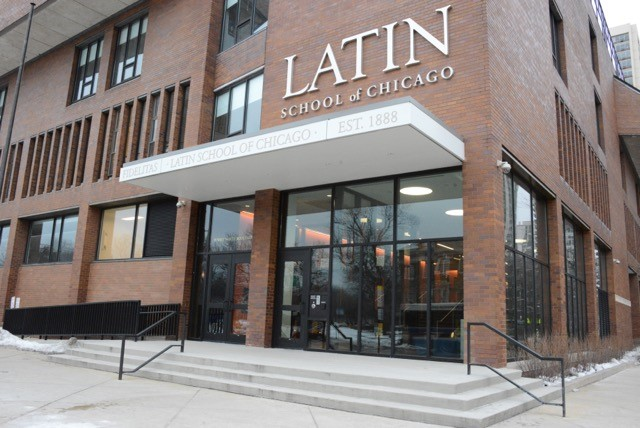

Northwestern University
Kellogg School of Management
Masters in Business Administration
Expected June 2016
Boston University
Bachelor of Arts
2007

Latin School of Chicago
High School
2003
MBA Candidate and Manager

Shilpa is a part time student at the Kellogg School of Management. She is also a dedicated member of the Bluhm Cardiovascular Institute (BCVI) management team at Northwestern Memorial Hospital, leading and collaborating on initiatives related to clinical outcomes, marketing, service line financial performance, business development/strategy, philanthropic fund management and other operational initiatives. She was born and raised in Chicago and lives in the city with her husband, Tyler.
Kellogg School of Management
Masters in Business Administration
Expected June 2016
Bachelor of Arts
2007
High School
2003
Budget management, recruitment, billing, program development
Oversight, management and improvement of clinical outcomes and financials